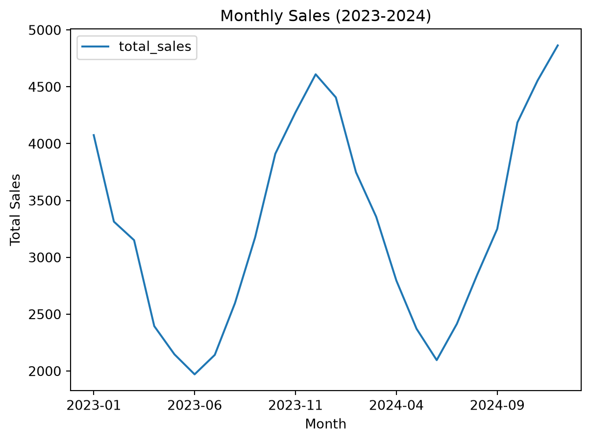

import numpy as np
import pandas as pd
import matplotlib.pyplot as plt
# Load sales data
sales = pd.read_csv("/Users/sarahcerny/Downloads/sales.csv")Daily Sales to Seasonal Trends
If you’ve ever worked retail you know the feeling. One week the store is dead and the next week everyone needs a winter coat and you’re sold out of everything good. That’s not random. Sales go up and down in a pattern that repeats every year and if you can spot it early you can plan for it instead of scrambling after it happens.
I wanted to see that pattern in an actual chart and it turns out it’s not too hard. In this tutorial I’ll show you how to take daily sales add them up by month and plot the result so the seasons jump out at you. You only need basic Python and a little bit of pandas.
The Tools
We’re using three libraries:
- pandas for organizing and grouping the data
- numpy for making up our practice data
- matplotlib for the chart
I just pulled the data from H&M fashion Dataset on Kaggle or a similar website and this should come with retail data already. If you want to follow along with my code the data I used is on my GitHub.
Building the Chart
Imports
Sales Dataframe
The sales have three pieces:
- a baseline: what the store normally sells in a day
- a seasonal bump: higher in winter lower in summer
- noise: random daily ups and downs because real life is messy
Looking at the Data
sales.head()| date | year_month | sales | |
|---|---|---|---|
| 0 | 2023-01-01 | 2023-01 | 118 |
| 1 | 2023-01-02 | 2023-01 | 148 |
| 2 | 2023-01-03 | 2023-01 | 138 |
| 3 | 2023-01-04 | 2023-01 | 131 |
| 4 | 2023-01-05 | 2023-01 | 131 |
This shows the first five rows one row per day with that day’s sales The whole table has 731 rows which is way too many to look at one by one so that’s our next problem.
Wrangling
Daily sales are super bouncy so it’s hard to see any pattern adding them up by month fixes that. The main thing we need to do is group the rows by month and add up the sales in each group:
monthly_sales = (
sales.groupby("year_month", as_index=False)
.agg(total_sales=("sales", "sum"))
)
monthly_sales| year_month | total_sales | |
|---|---|---|
| 0 | 2023-01 | 4075 |
| 1 | 2023-02 | 3314 |
| 2 | 2023-03 | 3151 |
| 3 | 2023-04 | 2395 |
| 4 | 2023-05 | 2147 |
| 5 | 2023-06 | 1971 |
| 6 | 2023-07 | 2142 |
| 7 | 2023-08 | 2597 |
| 8 | 2023-09 | 3176 |
| 9 | 2023-10 | 3911 |
| 10 | 2023-11 | 4275 |
| 11 | 2023-12 | 4610 |
| 12 | 2024-01 | 4407 |
| 13 | 2024-02 | 3748 |
| 14 | 2024-03 | 3357 |
| 15 | 2024-04 | 2796 |
| 16 | 2024-05 | 2372 |
| 17 | 2024-06 | 2096 |
| 18 | 2024-07 | 2415 |
| 19 | 2024-08 | 2844 |
| 20 | 2024-09 | 3250 |
| 21 | 2024-10 | 4186 |
| 22 | 2024-11 | 4555 |
| 23 | 2024-12 | 4864 |
- sales.groupby(“year_month”): puts all the rows from the same month into one group
- .agg(total_sales=(“sales”, “sum”)): adds up the sales in each group and calls the new column total_sales
Now we have 24 rows instead of 731: one total for each month.
Visualization
Now for Visualization
monthly_sales.plot.line(
x="year_month",
y="total_sales",
title="Monthly Sales (2023-2024)",
xlabel="Month",
ylabel="Total Sales"
)
- .plot.line(): draws a line chart
x="year_month"andy="total_sales": tell pandas which columns go on each axistitle,xlabel, andylabel: label the chart so people know what they’re looking at
You should see two big humps, one around each winter, with a dip in between. That’s the seasonality. The pattern repeats, so if it happened last December, it’s probably going to happen this December too.
You might also notice the whole line drifts up a little over time. That’s the trend, and it’s different from seasonality. Seasonality goes up and down every year, while a trend keeps heading in one direction.
Why This Matters
If you know sales jump every winter, you can stock up before the rush, schedule more people, and plan your promotions around it. This is also the basic idea behind forecasting. The fancy models that predict future sales are mostly doing a fancier version of this: finding the repeating pattern and projecting it forward.
Wrapping It Up
In this tutorial, you should have learned how to turn a pile of daily sales into a chart that shows the seasons, using groupby, .agg(), and .plot.line(). Even if it looked intimidating at first, it’s really just grouping your data and plotting it.
Now that you know how to do it, here are some things to try:
- Change
"sum"to"mean"to see average daily sales per month instead of the total - Use
.sort_values("total_sales", ascending=False).head(3)to find your three best months - Try it on real data, like the H&M dataset linked above
Happy plotting!